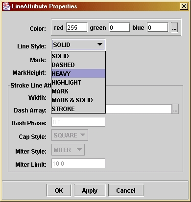
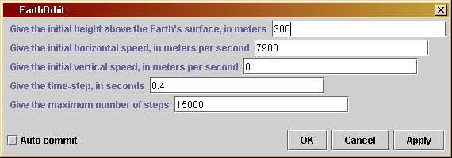

EarthOrbit
|
This program is similar to CannonTrajectory, but it goes beyond that calculation by allowing the direction of the acceleration of gravity to depend on position: the acceleration always points toward the center of the Earth. The mathematics for this extension is developed in Investigations 4.1 and 4.2.
Simply drag the EarthOrbit icon from
the toolbox into the working area, drag the SGTGrapher
unit into the area, and connect the two if Triana has not already done
so. Since EarthOrbit has two output
nodes, you need two input nodes on SGTGrapher.
Hover over the icon for the grapher until a "+" sign appears on it near
the input nodes, and then click on the "+" sign to add an extra
node. If you press the Start button then the program will execute
with its
default settings, namely with an initial height of 300 m above the
Earth's
surface, an initial launch velocity of speed of 7900 ms-1
horizontally, a time-step for the simulation of 0.4 s, and a maximum
number
of steps equal to 15000. A graph window will pop up showing the
trajectory.
Initially the grapher window will not necessarily use the same scale for distances in the horizontal and vertical direction, since it is set by default to adjust the scales to show the most information about the curve. Go to the "Plot" menu of the SGTGrapher display, and select "force equal ranges on both axes", then press "Reset Zoom".
The graph window will contain two plots, one being the surface of the Earth and the other being the trajectory. Since the trajectory initially skims the surface, it may be hard to see the trajectory. Go to the plot menu of the graph window and select "Plot properties". Then look for the item "Layer: Layer 2" and its sub-item "CartesianGraph: Graph2". Under this is "LineAttribute". Double-click on "LineAttribute" to bring up a dialog within which you can change the way SGTGrapher displays the trajectory (which is graph 2 if you have connected the second output node of the EarthOrbit unit to the second input of the grapher). This dialog is illustrated to the left. You might try changing the Line Style to "HEAVY". You could experiment with changing the color or other aspects of the display, as well. Moreover, if you go to the similar option for Graph 1 (the curve of the Earth's surface) you can choose a dashed line, which will make it even easier to see the trajectory. Do this after your first run and then you will find it easier to see the results of subsequent trials.
As
with other units, you can experiment with different trajectories by
changing
the values set in the parameter window. These include the initial
height,
velocity components, time-step, and maximum number of time-steps. The
parameter
window is illustrated below. Double-click on the EarthOrbit
unit in the working area to get this window. Type a new value into any
of the boxes, followed by the "Apply" key. Experiment with the launch
velocity
to see what speed gives the an orbit that goes all around the Earth.
Make
the time-step longer to see what effect this has.
The maximum number is needed here because it is possible to choose initial conditions such that the trajectory leaves the Earth and never returns, so the first test is not enough.
If you want to change the program you will have to re-compile it, as explained by the help file Using Triana for Gravity from the ground up.
/*
rEarth is the radius of the Earth
in meters.
*/
private double rEarth = 6378200;
/*
h0 is the initial height of the
projectile above the surface of
the Earth, in meters. This is its
starting position. Is value for
any run is set by the user in the
parameter window.
*/
private double h0;
/*
vInit is the initial
horizontal
speed of the projectile, in meters
per second. Its default value
is 7900, which is slightly smaller
than is required to achieve
orbit. Use the parameter window to
set it to 7906 to get into
orbit.
*/
private double vInit;
/*
uInit is the initial vertical
speed of the projectile, in meters
per second. Its value for
any run is set by the user in the
parameter window.
*/
private double uInit;
/*
dt is the time-step in seconds.
Its value for any run is set by the
user in the parameter window.
*/
private double dt;
/*
maxSteps is the maximum number of
steps in the calculation. This is
used to ensure that the calculation
will stop even if initial values
are chosen so that the projectile
goes far away. Its value for any
run is set by the user in the
parameter
window.
*/
private int maxSteps;
public void process() throws Exception {
/*
Define and
initialize the variables we will need. The position
and velocity
components are referred to an x-y coordinate system
whose origin
is at the center of the Earth. The initial starting
position
is taken to be on the y-axis, so that the initial value
of the
y-position
is the radius of the Earth added to the intial
height of
the starting position, i.e. rEarth + h0. The initial
x-speed
is the initial horizontal speed; the initial y-speed is
the initial
vertical speed. We need the following variables for
the
calculation:
- u0 and
u1 are the x-speeds used in the loop; as in
the program CannonTrajectory, we keep track of the speed
in the previous loop step separately from the current one.
u1 is the current position, u0 the previous one.
- v0 and
v1 are the y-speeds analogous to u0 and u1.
- x and
y are the x-coordinate position and y-coordinate
position, respectively.
- ax and
ay are the x-acceleration and y-acceleration, respectively.
- r is the
radial distance of the current position from the center
of the Earth.
-
xCoordinate
and yCoordinate are used to store the values of
x and y at each timestep. They are arrays of length maxSteps.
- j is an
integer counter for the loop steps.
*/
double u0 = uInit;
double u1 = u0;
double v0 = vInit;
double v1 = v0;
double x = 0;
double y = rEarth +
h0;
double ax, ay;
double r = Math.sqrt(
x*x + y*y );
double[] xCoordinate
= new double[ maxSteps ];
double[] yCoordinate
= new double[ maxSteps ];
xCoordinate[0] = x;
yCoordinate[0] = y;
int j;
/*
Now start
the loop that computes the trajectory. The loop counter
is j, which
starts at 1 and increases by 1 each step. The test for
exiting
from the loop will be either that the number of steps is
too large
or that the orbital radius r is less that the radius
of the Earth
rEarth, so the condition for continuing the loop is
( r >= rEarth ) && ( j < maxSteps )
*/
for ( j = 1; (( r >= rEarth ) && ( j < maxSteps )); j++ ) {
/*
First calculate the components of the acceleration of gravity
at the last computed position.
*/
ax = -g*x/r;
ay = -g*y/r;
/*
The velocity components change according to the acceleration.
As in program CannonTrajectory, we keep track of the previous
and current values of the velocity components separately.
*/
u1 = u0 + ax*dt;
v1 = v0 + ay*dt;
/*
The position components change according to the average of
the velocity during the last time-interval, as in
CannonTrajectory. Calculate the new radial distance from these.
Store the data in the position arrays.
*/
x = x + (u0 + u1)/2*dt;
y = y + (v0 + v1)/2*dt;
r = Math.sqrt(x*x + y*y);
xCoordinate[j] = x;
yCoordinate[j] = y;
/*
Now update the values of velocities to get ready for next
time-step.
*/
u0 = u1;
v0 = v1;
}
/*
The closing
bracket above is the end of the group of statements
that form
the loop. The computer increases j here and tests to
see if it
should do another step in the loop. If so it goes
back to
the first statement after the opening bracket at the end
of the "for"
statement above. If not it goes to the next statement.
*/
/*
We have
now exited from the loop. That means that either the radius
is inside
the Earth (the projectile has hit the ground), or the
loop has
run through maxSteps steps.
In the
latter
case, the user will see from the output that the
trajectory
is not ended. The whole thing can be run again
with a
larger
choice of time-step or a larger value of maxSteps,
but most
likely it is better to choose different initial conditions
so that
the orbit behaves better.
In order
to display the resulting orbit in a way that shows the
relationship
of the orbit to the Earth, we draw the circle representing
the Earth
as well as drawing the orbit. The coordinates of the Earth
are put
into the arrays xEarth and yEarth and are also output. This
means that
the unit will have two output nodes that have to be
connected
to the grapher. The first node (numbered 0) has the shape
of the Earth
and the second (numbered 1) has the trajectory.
The ouput
data sets are defined as objects of type Curve, which is
a Triana
data type. The data are assigned to each Curve when it is
created
by the "new" statement. In addition, a graph title is added
to each
Curve and axis labels are added to the Curve for the Earth's
shape. This
helps the graphing unit to display the information
intelligibly.
*/
int k;
double[] finalX = new
double[j];
double[] finalY = new
double[j];
for ( k = 0; k <
j;
k++ ) {
finalX[k] = xCoordinate[k];
finalY[k] = yCoordinate[k];
}
Curve out1 = new
Curve(
finalX, finalY );
out1.setTitle("Orbit
of the projectile");
double angleStep =
Math.PI/200;
double[] xEarth = new
double[400];
double[] yEarth = new
double[400];
for ( k = 0; k <
400;
k++ ) {
xEarth[k] = rEarth * Math.cos(angleStep * k);
yEarth[k] = rEarth * Math.sin(angleStep * k);
}
xEarth[400] =
xEarth[0];
// This ensures that the curve describing the
yEarth[400] =
yEarth[0];
// Earth is closed.
Curve out0 = new
Curve(
xEarth, yEarth );
out0.setTitle("Surface
of the Earth");
out0.setIndependentLabels(0,"horizontal
distance (m)");
out0.setDependentLabels(0,"vertical
distance (m)");
outputAtNode( 0, out0
);
outputAtNode( 1, out1
);
}